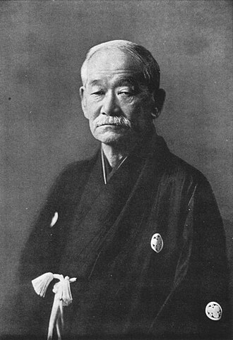

柔道とは
柔道は、日本の伝統武道のひとつであり、1882年に嘉納治五郎によって創設されました。

現代ではスポーツとしても国際的に広く親しまれていますが、その根底には教育や人格形成の理念があります。
技をかける様子

柔道の理念と意味
| 内容 | |
|---|---|
| 理念（創始者の考え） |
精力善用（せいりょくぜんよう）… 持てる力を最も有効に使うこと 自他共栄（じたきょうえい）… 自分と相手の共存・共栄を目指すこと |
| 意味（柔道の意義） |
単なる格闘技ではなく、人間形成を目的とする教育的武道 礼儀・協調性・努力を学び、人格を高める場 |
柔道とオリンピック
柔道は1964年の東京オリンピックで初めて正式競技として採用されました。
当初は男子のみの競技でしたが、1992年のバルセロナ大会から女子柔道も正式種目となり、
現在では男女それぞれ7階級、合計14種目が行われています。
オリンピックにおける柔道は、技の美しさや礼儀正しさが重視され、
「日本発祥の武道」として世界中に広く知られるようになりました。
日本はこれまでに多くの金メダリストを輩出し、柔道の強豪国としてその地位を確立しています。
また嘉納治五郎は「オリンピック運動の父」と言われています。